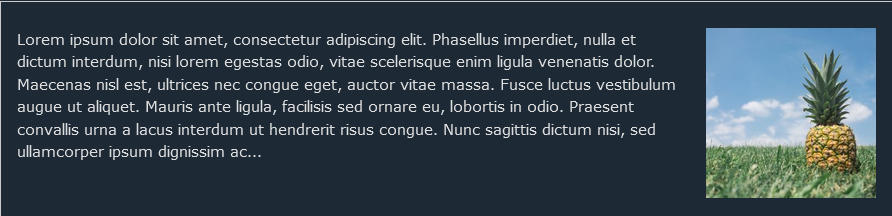

Konsep Dasar Float
Float merupakan properti pada CSS untuk mengatur posisi sebuah elemen.
Sebuah elemen dapat dipaksa untuk berada di sebelah kiri dari
parent/pembungkusnya dengan menggunakan properti ini.
-
Properti CSS float menentukan bagaimana suatu elemen harus
mengapung.
-
Properti float digunakan untuk memposisikan dan memformat konten,
misalnya. biarkan gambar melayang ke kiri ke teks dalam sebuah
wadah.
-
Begitu kita memberikan Float pada suatu element maka element
tersebut akan keluar dari flow sehingga parentnya tidak menganggap
itu sebuah kotak.
-
Properti float dapat memiliki salah satu dari nilai berikut:
-
none - Elemen tidak melayang (akan ditampilkan
tepat di tempat kemunculannya dalam teks). Ini adalah bawaannya
- Left - Elemen melayang ke kiri wadahnya
-
Right - Elemen mengapung di sebelah kanan wadahnya
-
inherit - Elemen mewarisi nilai float dari induknya
Example - float: right;

Properti CSS clear menentukan elemen apa yang bisa mengapung di samping elemen yang dibersihkan dan di sisi mana.
Tentang Clear :
- Ketika kita menggunakan properti float, dan kita ingin elemen berikutnya berada di bawah (bukan di kanan atau kiri), kita harus menggunakan properti clear.
- Properti clear menentukan apa yang harus terjadi dengan elemen yang berada di sebelah elemen mengambang.
- Properti clear dapat memiliki salah satu nilai berikut:
- none - Elemen tidak didorong ke bawah elemen melayang kiri atau kanan.Ini adalah bawaannya
- left - Elemen didorong ke bawah elemen melayang kiri
- right - Elemen didorong ke bawah elemen melayang kanan
- both - Elemen didorong ke bawah elemen melayang kiri dan kanan
- inherit - Elemen mewarisi nilai yang jelas dari induknya
Cara menghentikan / membersihkan float :
- Menggunakan properti overflow: auto;
- Menggunakan Div Kosong.
- Menggunakan teknik micro clearfix.
Contoh Clear :
Without clear
div1
div2 - Notice that div2 is after div1 in the HTML code. However, since div1 floats to the left, the text in div2 flows around div1.
With clear
div3
div4 - Here, clear: left; moves div4 down below the floating div3. The value "left" clears elements floated to the left. You can also clear "right" and "both".
Contoh Clearfix by Nicolas Gallagher:
With clearfix
Clearfix
Clearfix - Here, clear: left; moves div4 down below the floating div3. The value "left" clears elements floated to the left. You can also clear "right" and "both".